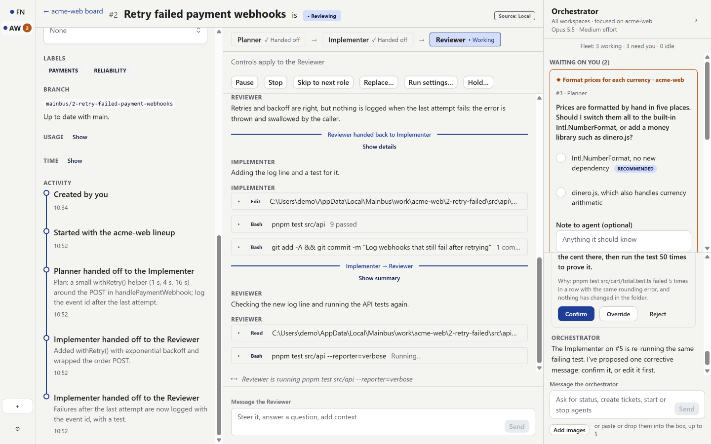
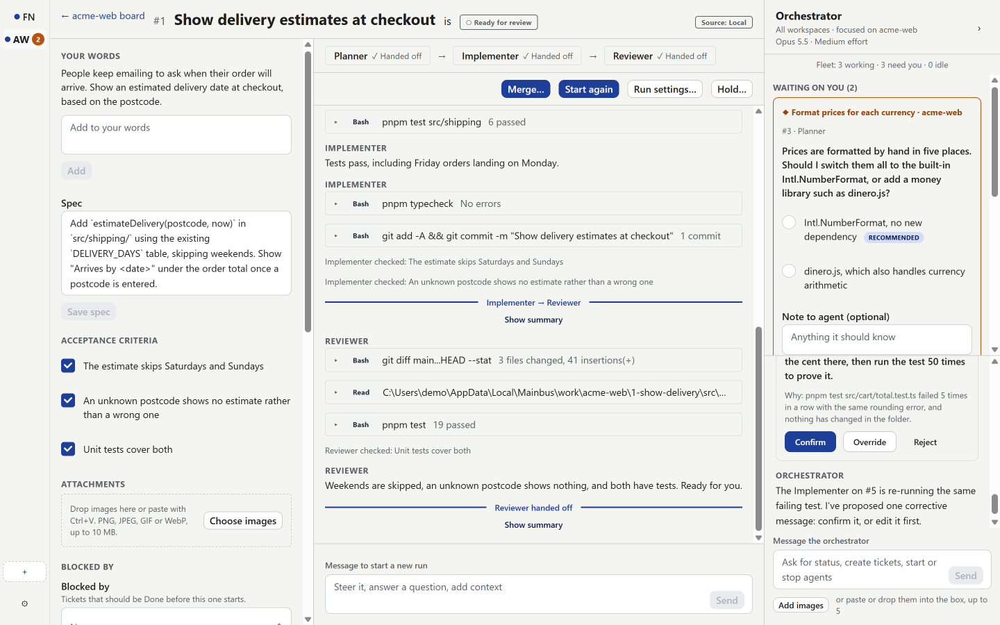
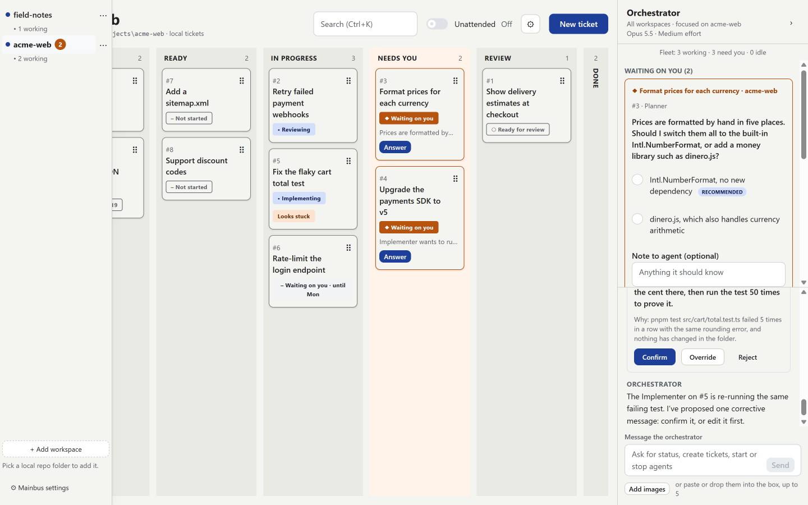
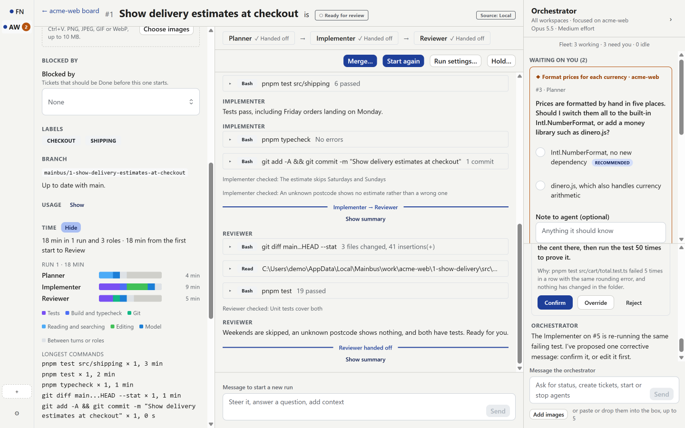

A desktop app that runs Claude Code agents on a ticket board.
You write a ticket, and a lineup of agents takes it from plan to a reviewed branch, each ticket in its own git worktree. Anything an agent wants to do outside its lane becomes a card you answer, and every ticket stops at Review for you to merge.
Windows 11 · Built from source, no installer yet · MIT licence
What it does
Every screenshot here is the real app, playing a scripted demo board with two made-up projects: acme-web, a web shop, and field-notes, a notes app.
A board per repository, a worktree per ticket
The columns are Backlog, Ready, In progress, Needs you, Review and Done. Cards show the ticket and its phase, never tokens or timers.
Each ticket gets its own branch, mainbus/<n>-<slug>, and a git worktree in Mainbus’s data folder, outside your repository. Agents never touch your checkout, and several tickets can run side by side. Moving a ticket to Done removes its worktree, but never one with uncommitted work.

Lineups of role agents, with handoffs
The default lineup is Planner → Implementer → Reviewer. Each role is a fresh agent that hands off to the next with a summary. A Reviewer can hand work back to the Implementer, up to three round trips, after which the ticket comes to you. Each workspace can reorder, add or edit its roles.
Run settings choose which roles run on a ticket, the model and effort for each, and extra instructions. A ticket can also start from one of the workspace’s presets.
Your words are the acceptance bar
A ticket’s intent, what you wrote, is kept word for word and given to every role as the standard it may not widen. Anything beyond it has to come back to you as a question. Roles tick the acceptance criteria as they verify them.

An orchestrator beside the board
A docked panel holds one read-only Claude Code session for all your workspaces. It can see every board and read each workspace’s repository. Ask it in plain words: it drafts tickets, creates them in Backlog with your words kept as the intent, edits tickets that haven’t started, and proposes starting, pausing, stopping, redirecting or replacing agents.
Each proposal is a card you confirm, override or reject. Mainbus, not the model, carries it out.
One decision, three places
Agents ask through a Mainbus tool rather than a terminal prompt. An open question shows on the board card, in the orchestrator panel and inline in the ticket’s thread, and answering it in any one of them resolves all three.
Later… puts a decision off until a date, when it comes back. A ticket can be put on hold, optionally until a date, and is released automatically when that date arrives.
Permission cards, a safety guard and unattended mode
Agents work in Claude Code’s accept-edits mode inside the ticket’s worktree. Anything else becomes a card: Allow once, Always allow in this workspace or Deny. The always-allow rules live in Mainbus’s database, never in your repository, where an agent might commit them.
A guard runs before those rules and always stops for you on any push, reading credential files, writing or working outside the ticket’s folders, touching ~/.claude or agent and git settings, deleting or renaming other branches, and changing git or npm config.
Unattended mode, per workspace, starts the lowest-numbered Ready ticket that isn’t held, one at a time. It may allow the guard’s lower-risk reasons on its own, but never the hard stops.
Stuck agents are noticed and recovered
Once a minute, a detector checks every running agent for a stuck pattern: the same command failing five times in a row, fifteen minutes without progress, ten minutes of silence, a long turn with no commit, ticked criterion or message, or a process that has ended.
Recovery goes up a ladder, each step a card the orchestrator proposes: Redirect sends one corrective message, Replace starts a fresh agent from a summary of the last run, and after two replacements the ticket comes to you.
Restarts, usage limits and a concurrency cap
On launch, Mainbus ends any processes a crash left behind and resumes the agents that were working. Paused, queued and waiting runs stay as they were, and holds that came due while it was closed are released.
When Claude’s usage limit is hit, every working agent is paused and a banner says when they resume; at the reset they resume in order. Agents running at once is capped (1 to 10, 3 by default), and the rest show as Queued and start first in, first out.
Investigate tickets and reports
An Investigate ticket runs a read-only Investigator that ends with a report instead of a change. Mainbus saves the report as a markdown file in your repository, docs/investigations/<date>-<n>-<slug>.md, and commits it on the ticket’s branch. Promote turns the report into a new Change ticket in Ready, with its spec drafted from the report.
Workspaces, themes and where the time went
Several repositories can be open at once, each a workspace with its own board, lineup, rules and unattended switch. A rail beside the board lists them with how many agents are working or waiting on you.
The app comes in Light, Dark, Night Owl and Light Owl, or follows Windows with a theme for each of its modes. And each ticket shows where its time went, per role: tests, builds, git, reading, editing, the model, and waiting on you.

Night Owl

A ticket’s time, per role
How it works
The board and the orchestrator panelA React app, sending typed commands
The engineRuns tickets through their lineups, with the concurrency cap, the stuck detector and the permission guard, and keeps everything in SQLite
The Claude Agent SDKOne long-lived, headless, streaming session per agent
The official claude binaryUnmodified, signed in with your own Claude subscription
Mainbus drives the official, unmodified claude binary through the Claude Agent SDK, on your own subscription. Claude Code handles its own login, and Mainbus never handles credentials. Each agent’s events are stored in SQLite and shown as the ticket’s thread.
Its rule is that state lives on disk and code owns the mechanics; the models only make judgement calls. Every role gets the same few Mainbus tools: ask you a question, hand off, submit a report, report a problem, tick a criterion and declare a wait. The engine, not the model, moves tickets between columns.
Requirements, honestly
Mainbus is a personal tool: one user, one machine, Windows first. There’s no installer or download yet; you build it from source.
Windows 11. Mainbus has only been built and run on Windows, and its stable build and command-line launcher are PowerShell and .cmd scripts.
Mainbus is an experiment in building software with AI agents, including the tool that runs them. It started as a design document and a spike that tested each assumption first: the permission guard exists because the spike showed the CLI’s automatic permission mode would allow a force-push and file deletion outside the working folder when the prompt implied it.
Since its first self-hosting version, Mainbus has been built by Mainbus. Each feature is a ticket on its own board, worked by its own agents, opened as a pull request, reviewed and merged. Rough edges found while using it go back on the board as tickets. This site was one of them.